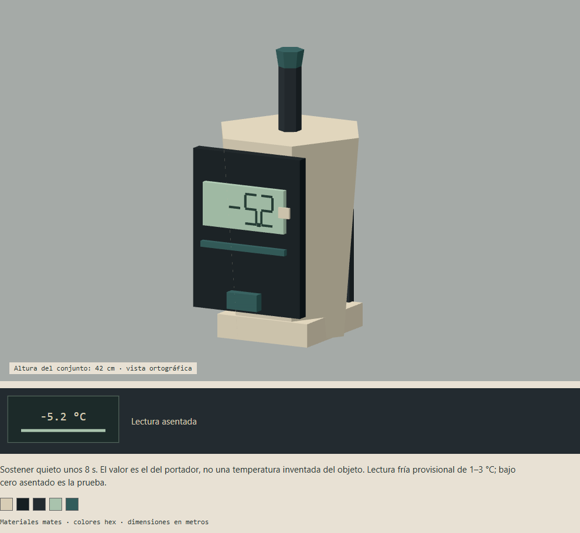
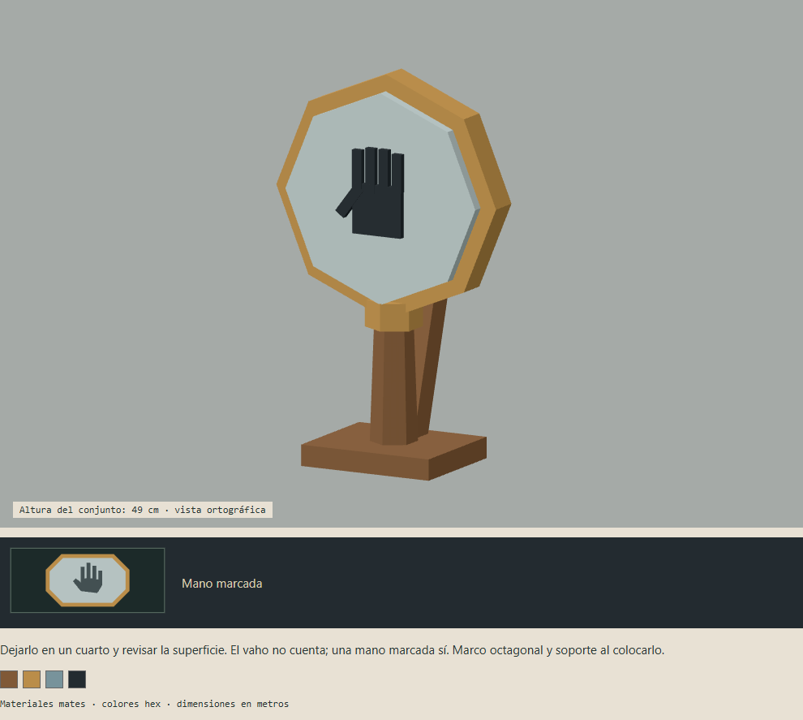

Siete modelos compartidos con el juego · 88 piezas editables · materiales mates y formas facetadas


Las pruebas se leen en cada aparato o en el entorno, según su función.
La UV revela marcas en superficies. La silueta de la cámara se consulta en la base.